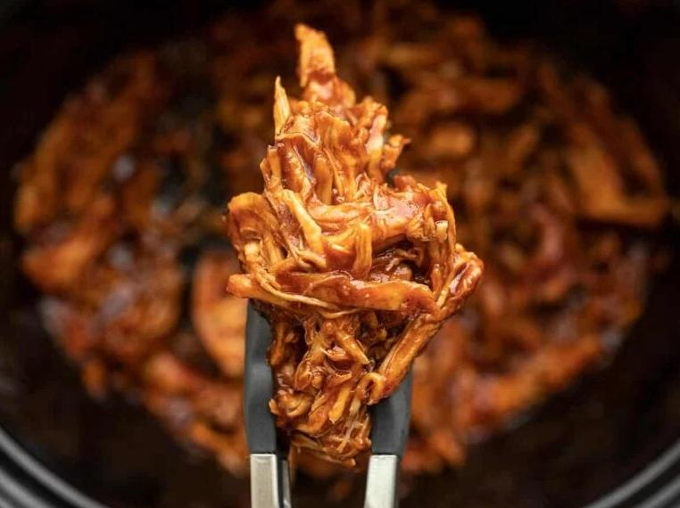

Slown Cooker BBQ Chicken

Description
"You can have this tasty chicken in the slow cooker doing its own thing while you’re enjoying a lazy summer day."
Ingredients
- 2 tsp smoked paprika/li>
- 1 tsp garlic powder
- 1/2 tsp salt
- 1/2 tsp freshly cracked pepper
- 2 boneless, skinless chicken breasts (about 1.3 lbs. total)
- 18 oz. BBQ sauce
Steps
- Combine the smoked paprika, garlic powder, salt, and pepper in a small bowl.
- Sprinkle the seasoning over both sides of the chicken breasts.
- Place the chicken breasts in the slow cooker, then pour the BBQ sauce over top making sure the chicken is fully covered.
- Place a lid on the slow cooker and cook on high for 2.5 hours or low for 4-5 hours.
- After cooking, use two forks to shred the chicken. If the chicken does not easily pull apart with the forks, let it cook a little longer.
- Serve the pulled BBQ chicken on a bun, on nachos, over a baked potato, on pizza, or with your favorite meal.